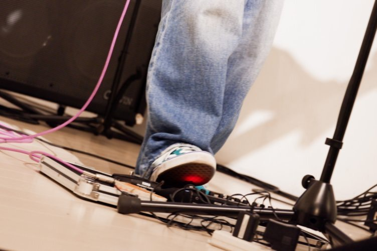
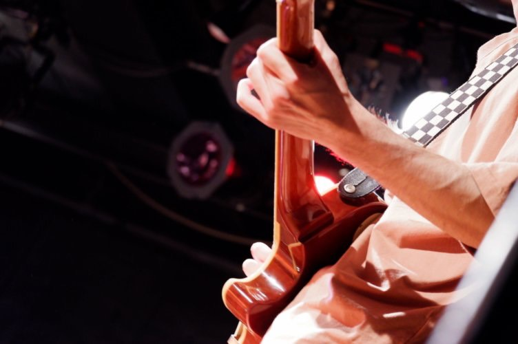
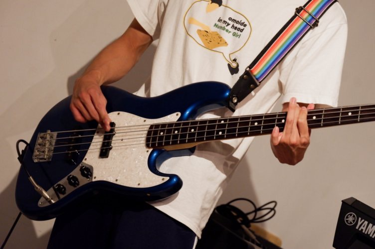
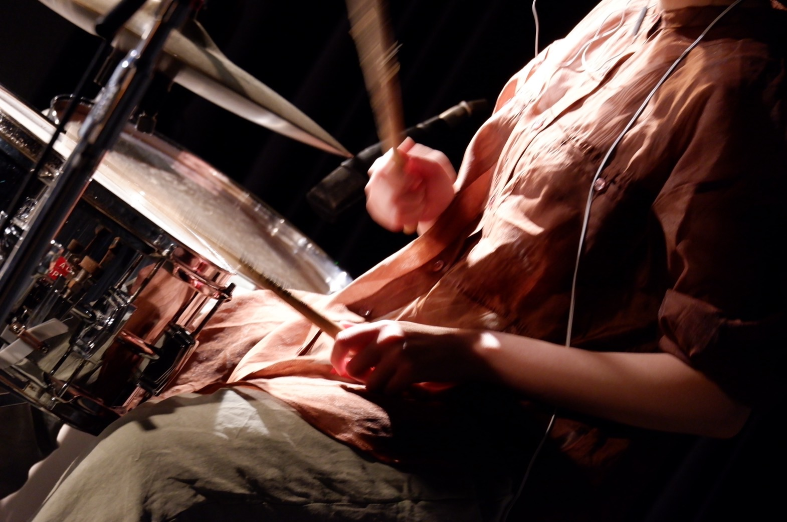
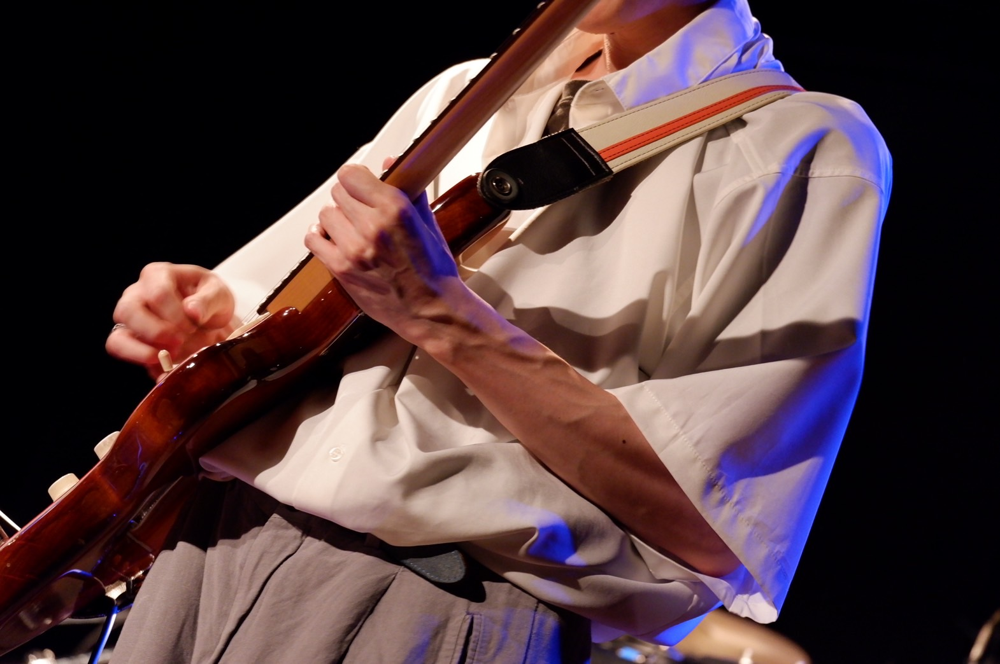
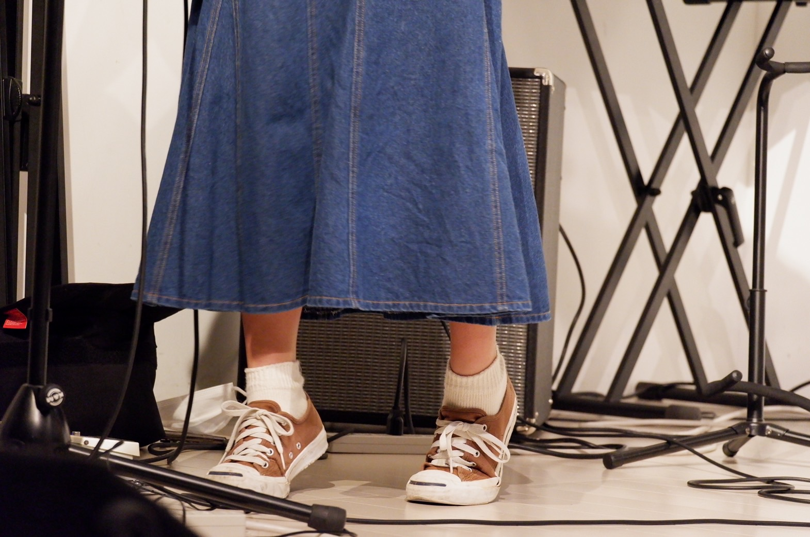

過去のライブ映像 年間に約6回ほどライブを行っています。主に「新歓ライブ」、「サマーコンサート」、「大学祭」、「クリスマスコンサート」、「追いコンサート」、「バレンタインコンサート」の６つです。 ここにそれらの過去のライブ映像を掲載しています。このサークルのメインの活動になるライブがどのように行われているのかを、このページを通して見て頂ければなと思います。  バレンタインコンサート  追いコンサート  クリスマスコンサート  大学祭  サマーコンサート  新歓ライブ その他の情報 Intro Event Column